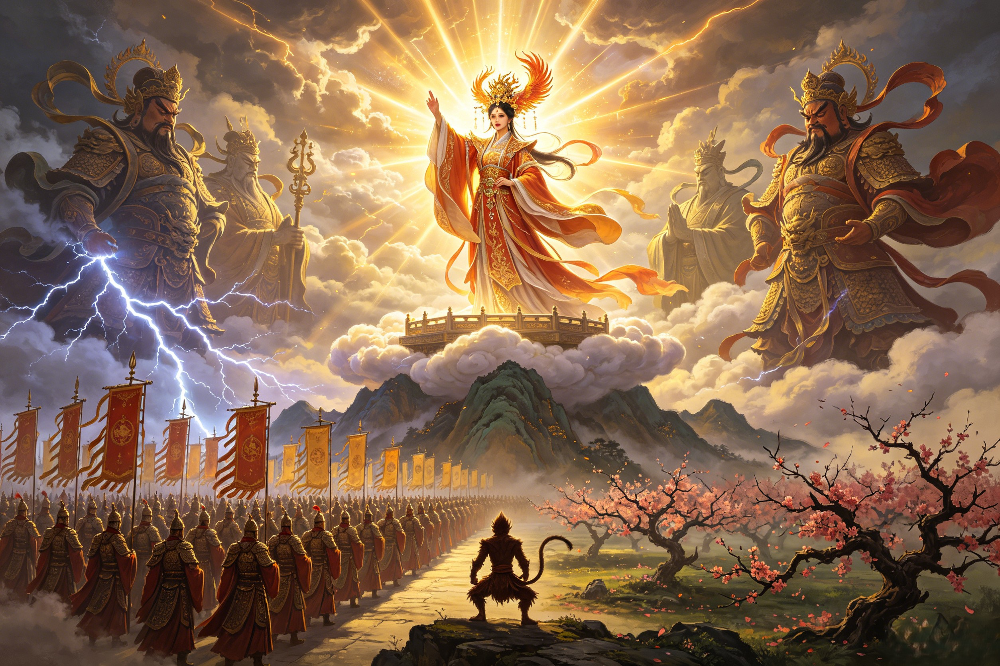

When the Matriarch Went to War
The Queen Mother of the West does not often lift a weapon. Her power lies elsewhere — in the command of armies, the authority to summon buddhas, and the primordial fury of a goddess who predates heaven itself. When the Peaches were stolen and the cosmic order threatened, she was the force that moved heaven to war.
When the Queen Mother of the West dispatched her seven fairy maidens to the Peach Garden to gather fruit for the celestial Peach Banquet, they found a scene of devastation. Every ripe peach had been eaten. The branches were stripped bare. The 3,600 trees — planted at the dawn of time, watered by the Jade Spring, tended by the goddess herself for millennia — had been ransacked. The fairy maidens rushed back to the Queen Mother's jade palace on Kunlun and delivered the report. They described a monkey sleeping in the crook of the largest tree, having gorged himself on the rarest third-tier peaches, each of which required 9,000 years to ripen. The Queen Mother listened in silence. Then she rose and proceeded directly to the Jade Emperor's audience hall in the Celestial Palace. This was not merely a theft. The Peaches of Immortality were the currency of cosmic order — the mechanism by which the celestial hierarchy renewed its immortality. By consuming them, Sun Wukong had not only committed an act of war; he had attempted to break the hierarchy of heaven itself. The Queen Mother's report to the Jade Emperor was measured but unmistakable: "The Great Sage Equal to Heaven has stolen the peaches. He has also drunk the celestial wine. He has raided Laozi's furnace. And now he sits on Flower-Fruit Mountain, laughing at us." Those words set in motion the greatest military mobilization in celestial history. The Queen Mother, as co-ruler and keeper of the orchards, had declared the crisis a matter of existential threat to the realm.
The Jade Emperor convened the full celestial court. Four Heavenly Kings. 100,000 celestial soldiers. The divine generals Li Jing and Nezha. But the Queen Mother's role in this council was not passive. As the co-sovereign of heaven and the victim of the theft, she was the second most powerful voice in the room. Ancient Taoist court protocol held that the Queen Mother's authority extended over all matters of immortality and ritual — and the Peach Banquet was the supreme ritual. The theft was an attack on her domain specifically. In the debates that followed, the Queen Mother advocated for total mobilization. She approved the deployment of the Four Heavenly Kings with their sacred weapons: the demon-slaying sword, the magic lute whose notes could shatter mountains, the enchanted umbrella that could swallow the sea, and the celestial snake. She personally authorized the release of Nezha, the volatile Third Prince, who had been confined to the Eastern Sea for his own destructive tendencies. When the first wave of the celestial army was shattered — when Nezha himself was struck down by Sun Wukong's iron staff — it was the Queen Mother who steadied the Jade Emperor's resolve. Accounts describe her standing beside the throne, her voice calm but absolute: "He cannot be allowed to win. If one being can defy heaven and succeed, then heaven ceases to be heaven." It was her presence that pushed the Jade Emperor toward the escalation that followed: the summoning of Erlang Shen, the deployment of the Supreme Lord Laozi's Diamond Snare, and ultimately the decision to call upon powers beyond the celestial court itself.
The decisive moment came when Erlang Shen, with Laozi's aid, finally subdued Sun Wukong and delivered him to heaven in chains. But the celestial court could not kill an immortal. They tried execution by beheading — the axes shattered. They tried the thunderbolt — it dissipated against his skin. They tried the Eight Trigrams Furnace — 49 days later, Sun Wukong burst out with fiery golden eyes and rampaged directly into the Jade Emperor's throne room. At this moment of absolute crisis, when the celestial palace was in flames and no general could stand against the Monkey King, the Queen Mother of the West acted decisively. It was she — not the Jade Emperor — who is credited in many versions of the tale with summoning the Buddha himself. Her reasoning, preserved in the Ming dynasty novel, was both practical and cosmic: "Only the Tathagata of the Western Paradise has the wisdom and power to contain this creature. The Monkey's strength is not of heaven. His nature is beyond heaven. He must be met by one who is beyond heaven as well." She dispatched an envoy to the Western Pure Land — and the Buddha came. The Buddha's arrival changed everything. He did not fight Sun Wukong. He wagered with him: "If you can jump out of my palm, I will abdicate my western paradise to you." The Monkey King leapt across the cosmos on his somersault cloud, reached five pillars at the edge of the universe, and marked them. He returned to find he had never left the Buddha's hand — and the pillars were the Buddha's fingers. The Queen Mother's judgment had been vindicated. She alone had recognized that the Monkey King could not be met with force, but with something greater than force. It was the most sophisticated strategic decision of the entire war, and it came from the Empress of Immortality.
Before she was the serene empress of the Peach Garden, the Queen Mother of the West was a wild, terrifying deity — a goddess of plague, punishment, and death. The Classic of Mountains and Seas (Shan Hai Jing), one of the oldest Chinese texts, describes her as "a human figure with a leopard's tail and tiger's teeth, whose hair is always disheveled, who commands the Five Punishments and sends epidemics among the living." This was not a goddess who watched battles from afar — she was the battle. Ancient accounts place her at the head of wild hunts across the desolate plains west of Kunlun, attended by her three blue birds and accompanied by the Openbright Beast, a nine-faced tiger-bodied guardian who devoured those who trespassed on her domain. She commanded plague clouds that could wither crops across an entire kingdom and diseases that struck down armies without a blade being drawn. Kings and warlords of the Zhou dynasty sought her favor — or feared her wrath — above all other deities. The famed archer Hou Yi, after shooting down nine of the ten sun-crows, traveled to Kunlun not to fight the Queen Mother but to beg her for the elixir of immortality. She granted it — and when his wife Chang'e consumed it instead and fled to the moon, it was the Queen Mother's judgment that decided Chang'e's eternal fate. Even the Bull Demon King, one of the great demon lords of Journey to the West, never dared challenge the Queen Mother directly, for the primordial memory of her as a goddess of wild punishment had never truly faded. The Goddess Guanyin, herself a figure of immense compassion, is said to defer to the Queen Mother's authority in matters of cosmic punishment that require severity beyond mercy. The Queen Mother's battles are not always fought with armies. Sometimes they are fought with the withholding of grace, with the refusal to grant the peaches that mean continued existence, with the silent judgment that lets a dynasty fall or a plague descend. That is the older, stranger power beneath the golden robes — the power of a goddess who was worshipped before heaven had an emperor, when the Queen Mother of the West was the supreme ruler of all that lay beyond the known world.
The classic CCTV adaptation of the Peach Banquet crisis, featuring the Queen Mother of the West's confrontation with Sun Wukong and the deployment of heaven's army. This beloved Chinese television series — watched by over a billion viewers since its release — remains the definitive live-action portrayal of the celestial court and the great rebellion.
Search YouTube for "Journey to the West 1986 Episode 3"The critically acclaimed action RPG from Game Science reimagines the conflict between the celestial court and the rebellious Monkey King. While the Queen Mother herself does not appear directly in the game, the Yaochi (Jade Spring) and the Peach Garden serve as key locations, and the political structures she represents shape the game's narrative backdrop.
Available on Steam, PlayStation 5, and Xbox Series X|SThe Queen Mother of the West played a central command role in the celestial war against Sun Wukong. As the co-ruler of heaven and the keeper of the Peaches of Immortality, she was directly affected by the Monkey King's theft of the peaches. She personally reported the theft to the Jade Emperor, advocated for total military mobilization, approved the deployment of the Four Heavenly Kings and 100,000 celestial soldiers, and when the army failed, she made the decisive call to summon the Buddha from the Western Paradise. She was not a passive figure in heaven's response — she was the driving force behind the escalation that eventually contained the rebellion.
In the standard Ming dynasty account of Journey to the West, the Queen Mother does not engage in direct physical combat. However, this does not diminish her role as a warrior. In the older, primordial traditions recorded in the Classic of Mountains and Seas, she was a terrifying demon goddess with a leopard's tail and tiger's teeth who commanded plagues, presided over the Five Punishments, and devoured those who crossed her. The Queen Mother's power was never primarily physical — it was cosmic and political. She commanded the forces of heaven, controlled access to immortality, and held authority over life, death, and punishment. A being who can decide whether you live forever or die tomorrow does not need to swing a blade.
Beyond the Havoc in Heaven, the Queen Mother of the West is associated with numerous mythic conflicts: the war against the demon lords of the western wastes during her primordial era as a wild goddess; her role in judging Hou Yi and Chang'e after the theft of the elixir of immortality; her authority over the Five Punishments (branding, nose-cutting, amputation, castration, and death) in the oldest legal-mythic traditions; her control over epidemic clouds sent to punish mortal kingdoms that offended heaven; and her influence in later Journey to the West episodes where demons who threaten the cosmic order are understood to be ultimately subject to her judgment, even if Zhu Bajie and Tang Sanzang's other disciples are the ones doing the fighting.
Dive Deeper